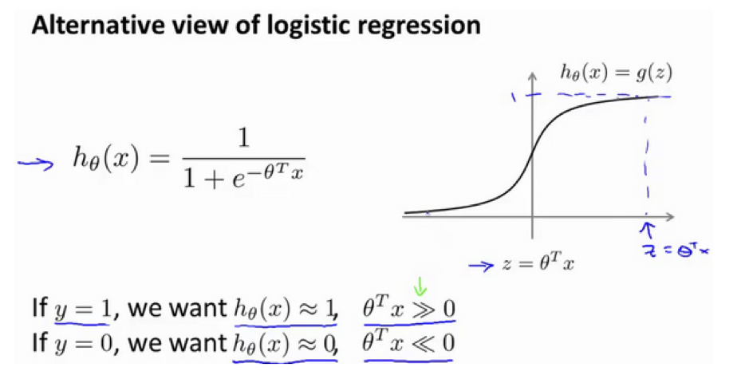
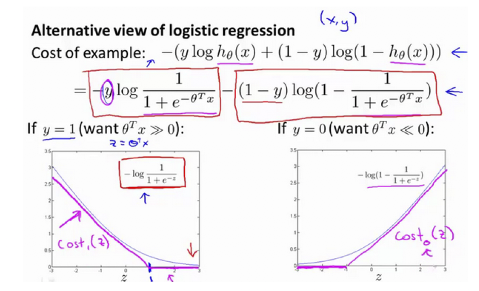
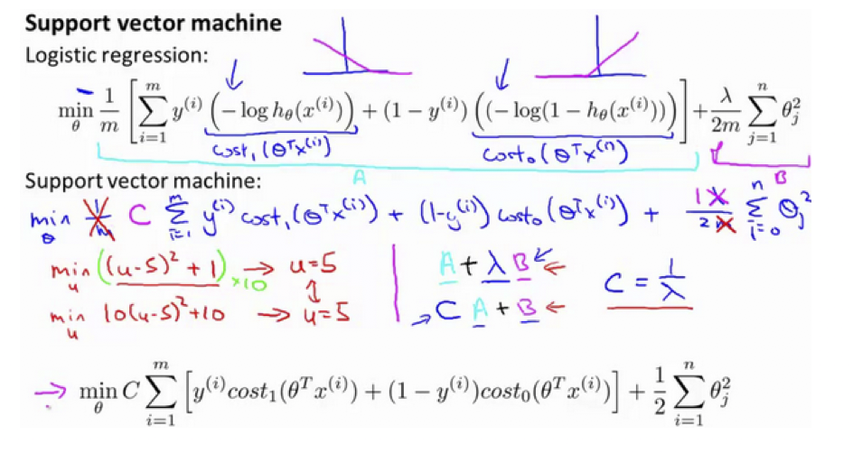
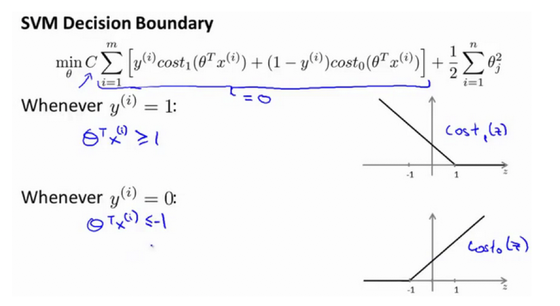
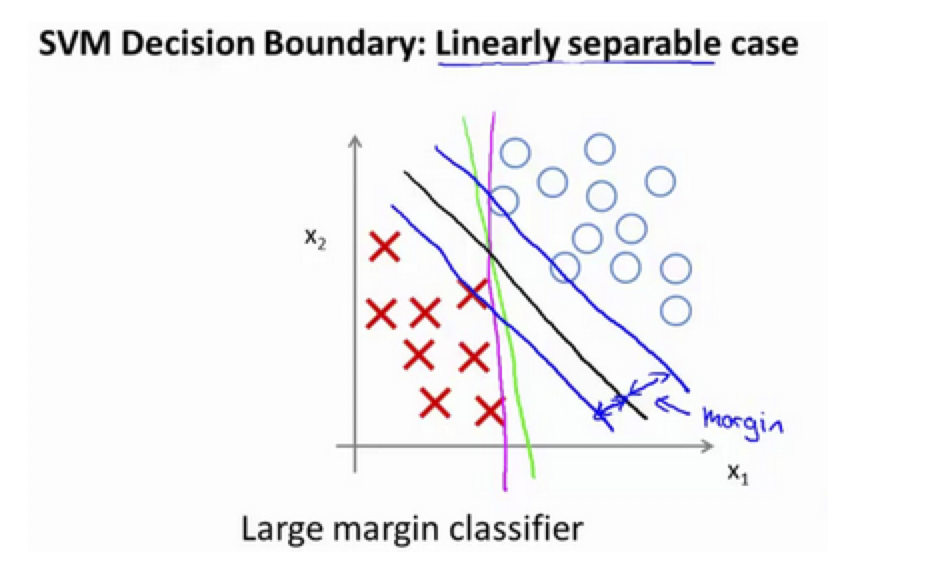
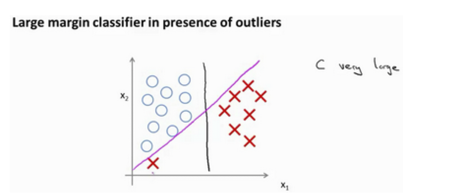

Support Vector Machines
代价函数
在逻辑回归中，我们的预测函数为：
$h_{\theta}(x) = \frac{1}{1+e^{-\theta^T x}}$
代价函数为：$cost = -ylogh_{\theta}(x)+(1-y)log(1-h_{\theta}(x))$

当 $y=1 $时，代价函数就为：
$\begin{align}
cost &= -logh_{\theta}(x)\
= -log\frac{1}{1+e^{-z}}, \quad z=\theta^T x
\end{align}$
不难看出，当 $y=1$时，随着 $ z$ 取值变大，预测代价变小，因此，逻辑回归想要在面对正样本 $ y=1$时，获得足够高的预测精度，就希望 $z=θTx≫0$ 。而 SVM 则将上图的曲线拉直为下图中的折线，构成了 $y=1$时的代价函数曲线 $cost1(z)$。
当 $ y=1$ 时，为了预测精度足够高，SVM 希望 $θTx≥1$。同样，在 $ y=0$时，SVM 定义了代价函数 $ cost0(z)$，为了预测精度足够高，SVM 希望 $ θTx≤−1$：


SVM定义其最小化预测代价的过程为：
$\min\limits_{\theta}C[\sum\limits_{i=1}^{m}y^{(i)}cost_1(\theta^Tx^{(i)})+(1-y^{(i)})cost_0(\theta^Tx^{(i)})]+\frac{1}{2}\sum\limits_{j=1}^{n}\theta_j^2$
而在逻辑回归中，最小化预测代价的过程为：
$
\min\limits_{\theta}\frac{1}{m}[\sum\limits_{i=1}^{m}y^{(i)}(-logh_\theta(x^{(i)}))+(1-y^{(i)})(-log(1-h_\theta(x^{(i)})))] + \frac{\lambda}{2m}\sum\limits_{j=1}^{n}\theta_j^2
$
事实上，我们可以将逻辑回归的代价函数简要描述为：$cost=A+λB$
而 SVM 的代价函数描述为：$cost=CA+B$
即，在逻辑回归中，我们通过正规化参数 $ λ$调节 $A、 B$所占的权重，且 $A$ 的权重与$λ$取值成反比。而在SVM中，则通过参数 $C$调节 $ A、B$所占的权重，且A的权重与$C$的取值成反比。亦即，参数$C
$可以被认为是扮演了 $ \frac{1}{\lambda}$ 的角色。
大间距分类器
SVM 最小化代价函数过程为：
$ \min\limits_{\theta}C[\sum\limits_{i=1}^{m}y^{(i)}cost_1(\theta^Tx^{(i)})+(1-y^{(i)})cost_0(\theta^Tx^{(i)})]+\frac{1}{2}\sum\limits_{j=1}^{n}\theta_j^2 $

并且，当 $ y^{(i)}=1$时，SVM 希望 $\theta^Tx^{(i)} \geq 1$；而当 $y^{(i)}=0$时，SVM 希望 $\theta^Tx^{(i)} \leq -1$。则最小化代价函数的过程就可以描述为：
SVM 最终找出的决策边界会是下图中黑色直线所示的决策边界，而不是绿色或者紫色的决策边界。该决策边界保持了与正、负样本都足够大的距离，因此，SVM 是典型的大间距分类器（Large margin classifier）。

事实上，支持向量机现在要比这个大间距分类器所体现得更成熟，尤其是当你使用大间距分类器的时候，你的学习算法会受异常点(outlier) 的影响。比如我们加入一个额外的正样本。

在这里，如果你加了这个样本，为了将样本用最大间距分开，也许我最终会得到一条类似这样的决策界，对么？就是这条粉色的线，仅仅基于一个异常值，仅仅基于一个样本，就将我的决策界从这条黑线变到这条粉线，这实在是不明智的。而如果正则化参数$C$，设置的非常大，这事实上正是支持向量机将会做的。它将决策界，从黑线变到了粉线，但是如果$C$ 设置的小一点，如果你将C设置的不要太大，则你最终会得到这条黑线，当然数据如果不是线性可分的，如果你在这里有一些正样本或者你在这里有一些负样本，则支持向量机也会将它们恰当分开。因此，大间距分类器的描述，仅仅是从直观上给出了正则化参数$C$非常大的情形，同时，要提醒你$C$的作用类似于$1/\lambda$，$\lambda$是我们之前使用过的正则化参数。这只是$C$非常大的情形，或者等价地 $\lambda$ 非常小的情形。你最终会得到类似粉线这样的决策界，但是实际上应用支持向量机的时候，当$C$不是非常非常大的时候，它可以忽略掉一些异常点的影响，得到更好的决策界。甚至当你的数据不是线性可分的时候，支持向量机也可以给出好的结果。
回顾 $C=1/\lambda$，因此：
$C$ 较大时，相当于 $\lambda$ 较小，可能会导致过拟合，高方差。
$C$ 较小时，相当于$\lambda$较大，可能会导致低拟合，高偏差。